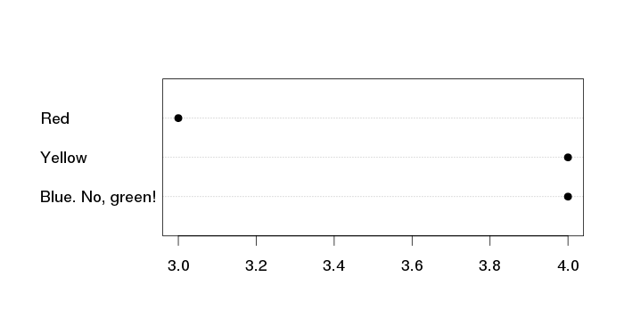

For the best experience please use the latest Chrome, Safari or Firefox browser.
A HOLISTIC APPROACH TO DOCUMENTATION, TESTING, DEVELOPMENT AND DEPLOYMENT
http://dexy.it @dexyit
Ana Nelson @ananelson
http://github.com/ananelson/talks
Developers Won't Write Docs.
Developers Won't Write Docs for other people in their spare time using crappy tools for free without the end result being valued and maintained.
> v <- fetch(dbSendQuery(con,
+ "select * from polls_choice"))
> dotchart(v$votes, labels=v$choice_text,
+ pch=19, cex=1.5)

http://dexy.it @dexyit
Ana Nelson @ananelson
http://github.com/ananelson/talks
Use a spacebar or arrow keys to navigate